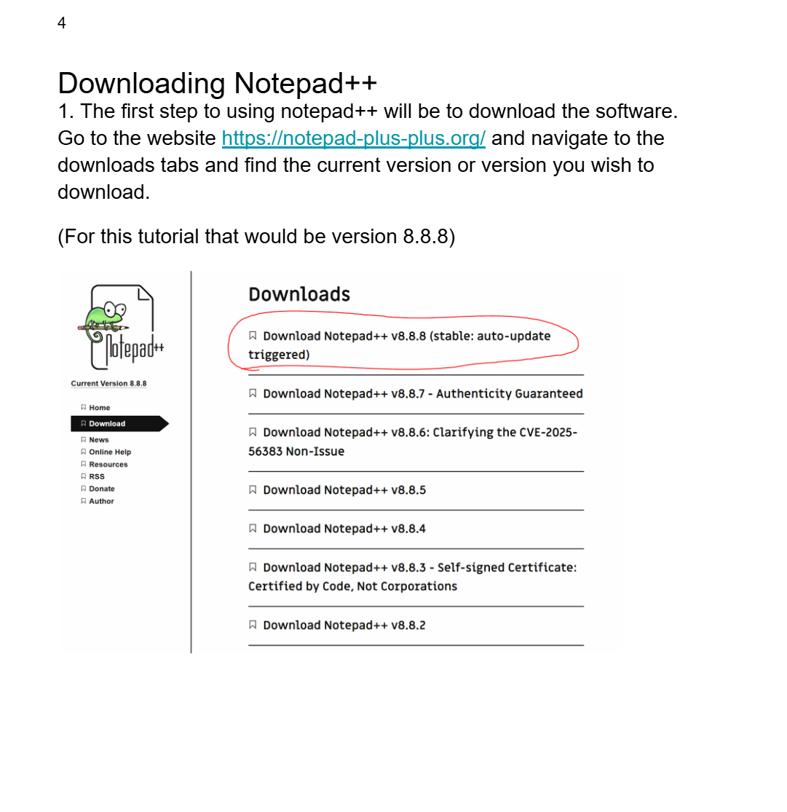

Notepad++ Tutorial for ENC4265 - Writing for the Computer Industry
The project I made this tutorial for was to help learn what it took to create a tutorial for something inside the software industry.
The main goals being to teach how to properly plan, research, write, design, and illustrate a tutorial. It would also serve as a way
to demonstrate what we have learned in the class up to that point for not only writing and critiquing tutorials but also how to generally
write things for the internet. Some of the main skills I learned from this project was how to properly research and understand the audience you write for
and how to properly explain as well as illustrate instructions so they are easily understandable.
